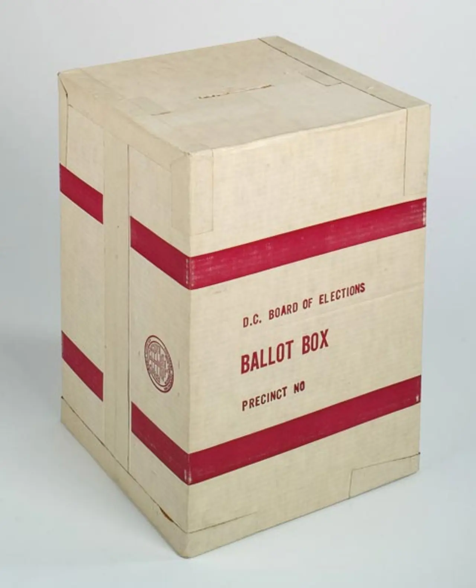

2026년 지방선거가 막판 국면으로 들어가면서 지역 공약이 쏟아지고 있습니다. 교통, 주거, 돌봄, 교육, 상권, 안전, 환경 같은 생활 의제가 한꺼번에 등장합니다. 지방선거는 중앙 정치의 분위기를 반영하지만, 실제 유권자의 삶에 닿는 것은 버스 노선, 재개발 인허가, 학교 주변 안전, 공공시설 운영 같은 구체적인 문제입니다. 그래서 후보의 큰 구호보다 그 구호가 예산과 권한 안에서 어떻게 실행되는지 봐야 합니다.
막판 선거운동에서는 듣기 좋은 약속이 많아집니다. 하지만 지방정부가 할 수 있는 일과 중앙정부나 국회가 해야 하는 일은 다릅니다. 지자체장이 바꿀 수 있는 조례, 예산, 인사, 인허가 권한이 있고, 교육감이나 지방의회가 맡는 영역도 따로 있습니다. 공약을 볼 때 첫 질문은 “좋은 말인가”가 아니라 “그 사람이 실제로 할 수 있는 일인가”입니다.
선거운동은 생활 문제로 내려옵니다

지방선거의 장점은 의제가 구체적이라는 점입니다. 출퇴근 시간이 줄어드는지, 동네 병원이 사라지지 않는지, 어린이집과 돌봄 공백이 줄어드는지, 낡은 하수관과 도로가 정비되는지가 중요합니다. 큰 이념보다 생활의 불편이 표심을 움직입니다. 후보가 지역을 잘 안다는 말은 동네 이름을 많이 말하는 것이 아니라 문제의 순서를 알고 있다는 뜻입니다.
유권자는 공약의 대상과 범위를 확인해야 합니다. 청년 주거 공약이라면 몇 가구를 어떤 방식으로 공급하는지, 임대료 기준은 무엇인지, 기존 임대주택 정책과 어떻게 다른지 봐야 합니다. 상권 지원 공약이라면 현금성 지원인지, 임대료 조정인지, 보행 환경 개선인지 구분해야 합니다. 같은 이름의 공약도 설계가 다르면 효과가 완전히 달라집니다.
재원 없는 공약은 오래 못 갑니다
지방정부의 예산은 무한하지 않습니다. 새로운 사업을 하려면 기존 사업을 줄이거나, 지방채를 늘리거나, 중앙정부 보조금과 민간투자를 끌어와야 합니다. 후보가 큰 사업을 약속했다면 재원 출처를 함께 말해야 합니다. “예산을 확보하겠다”는 문장만으로는 부족합니다. 어느 회계에서, 몇 년 동안, 어떤 우선순위로 돈을 쓸지 보여 줘야 합니다.
특히 건설과 개발 공약은 비용이 커지기 쉽습니다. 처음에는 적은 돈으로 시작하는 것처럼 보여도 토지 보상, 설계 변경, 민원 대응, 운영비가 뒤따릅니다. 도서관, 체육관, 문화센터를 짓는 일보다 더 어려운 것은 매년 운영비를 감당하는 일입니다. 공약의 진짜 비용은 착공식이 아니라 개관 뒤 몇 년 동안 드러납니다.
권한의 경계를 따져야 합니다
후보가 말하는 문제 중 일부는 지방정부 혼자 해결할 수 없습니다. 철도 노선, 광역도로, 대학 정책, 건강보험, 세제 같은 영역은 중앙정부와 국회, 다른 지자체의 협력이 필요합니다. 그렇다고 지방정부가 아무 역할도 못 하는 것은 아닙니다. 사전 타당성 조사, 부지 확보, 주민 협의, 도시계획 변경처럼 준비할 수 있는 일이 있습니다.
좋은 공약은 권한의 한계를 숨기지 않습니다. “당장 하겠다”가 아니라 “우리 권한으로 먼저 할 일과 협의가 필요한 일을 나누겠다”고 말해야 신뢰가 생깁니다. 유권자는 후보가 모든 것을 해결하겠다고 말할 때보다, 무엇을 직접 하고 무엇을 협상해야 하는지 구분할 때 더 주의 깊게 봐야 합니다.
검증은 선거 뒤에도 이어져야 합니다
지방선거 공약은 투표일에 끝나지 않습니다. 당선 뒤 인수위 보고서, 첫 예산안, 조직 개편, 조례 발의, 사업 평가표에서 다시 확인해야 합니다. 선거 때 크게 말한 사업이 실제 예산서에 들어갔는지, 들어갔다면 규모가 줄었는지, 일정이 밀렸는지 보는 과정이 필요합니다. 민주주의는 투표로 시작하지만 감시는 그 뒤에 더 길게 이어집니다.
지역 언론과 시민단체, 주민 모임의 역할도 큽니다. 중앙 정치 뉴스가 모든 지역 공약을 따라갈 수 없기 때문입니다. 유권자가 공약집을 한 번 더 읽고, 후보 토론에서 숫자를 묻고, 당선 뒤 예산을 확인하면 지역정치는 조금씩 달라질 수 있습니다. 막판 선거운동의 소음 속에서도 재원과 권한, 순서를 묻는 질문은 흔들리지 않아야 합니다.
지방선거 공약은 중앙정치의 구호보다 생활 행정에 더 가까워야 합니다. 버스 배차, 돌봄 시설, 청년 주거, 재난 대응, 골목 상권 같은 문제는 예산과 인력, 조례가 함께 움직여야 해결됩니다. 후보가 좋은 방향을 말하는 것만으로는 부족합니다. 어느 부서가 집행하는지, 기존 사업과 겹치지 않는지, 첫해 예산을 어디에서 가져오는지 확인해야 합니다. 지역 정책은 말보다 표와 예산서에서 먼저 현실성을 드러냅니다.
유권자에게 필요한 기준은 후보의 인상보다 실행 순서입니다. 임기 첫 6개월에 바꿀 수 있는 일과 중앙정부 협의가 필요한 일을 구분해야 합니다. 공약집에 숫자가 있다면 재원 출처와 대상 규모를 함께 보고, 숫자가 없다면 왜 빠졌는지 물어야 합니다. 선거 막판에는 감정적인 프레임이 커지기 쉽지만, 실제 삶을 바꾸는 것은 화려한 문구가 아니라 반복해서 점검 가능한 행정 계획입니다.
토론회와 공보물에서는 반대 질문을 어떻게 다루는지도 봐야 합니다. 좋은 정책은 장점만 말하지 않고 불편한 비용을 인정합니다. 주차장을 줄이면 보행 환경은 좋아질 수 있지만 상권 반발이 생길 수 있고, 복지 시설을 늘리면 운영 인력과 장기 예산이 필요합니다. 후보가 이런 균형을 설명하지 않고 모두에게 좋은 말만 반복한다면 집행 단계에서 충돌이 커질 가능성이 높습니다. 지역 선거의 신뢰는 불가능한 약속을 줄이는 데서 시작합니다.
지역 언론과 시민단체의 검증 자료도 적극적으로 활용할 만합니다. 중앙 뉴스에는 크게 나오지 않아도 지역 예산 낭비, 민원 처리 속도, 조례 통과 이력은 후보를 판단하는 데 꽤 직접적인 자료가 됩니다. 특히 현직 후보라면 새 공약보다 지난 공약의 이행률을 먼저 봐야 합니다. 약속을 지킨 방식이 투명했는지, 미룬 이유를 설명했는지, 예산 변화에 따라 우선순위를 조정했는지가 다음 임기의 신뢰를 보여 줍니다.
지방선거는 거대한 구호보다 작은 실행의 선거입니다. 공약이 화려할수록 재원표와 일정표가 필요합니다. 후보가 말하는 미래를 믿을지 판단하려면, 그 미래가 어느 예산 항목에서 시작되고 누가 책임지는지 먼저 확인해야 합니다.